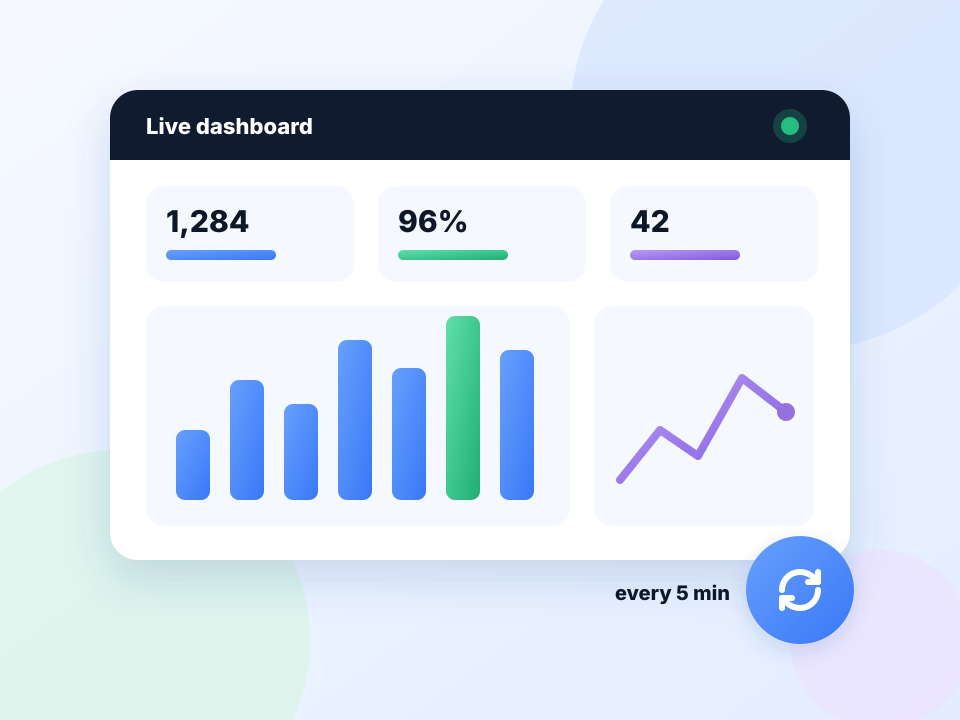

Dashboards that stay up to date.
Reports and BI dashboards often show stale numbers until someone reloads. Put them on a timer.

How dashboards works
Reports and BI dashboards often show stale numbers until someone reloads. Put them on a timer.
Refreshing does not resume by itself yet. Open the dashboard and press Start, or use Alt+Shift+R.
Quick setup
Open the dashboard in its own tab or window.
Set Min and Max to 300.
Turn off On-page badge and leave Keep the tab awake on.
Auto refresh a dashboard on a wall screen
Many reporting and BI dashboards only update when the page reloads. On a wall screen or second monitor, that means stale numbers until someone walks over. A fixed five-minute auto refresh keeps them current all day.
Set up for an unattended screen
- Hide the on-page counter for a clean display.
- Keep the tab awake so the browser does not unload it.
- Turn on Hard reload if figures look cached.
- Use a fixed interval; there is no need for random timing on your own tools.
Good to know
Refreshing does not restart by itself after the browser is reopened. Press Start, or Alt+Shift+R, when the screen comes back on.
A worked example: a sales screen
Open the dashboard in its own window on the wall screen. In the popup set Min and Max to 300, open Advanced, switch off On-page badge and confirm Keep the tab awake is on. Press Start, then press F11 for full screen. The dashboard now reloads every five minutes with nothing drawn over it.
If the numbers still look old
- Turn on Hard reload to bypass cached data.
- Check the dashboard's own cache. Some tools only recompute every few minutes whatever you do.
- Confirm you are still signed in. A login page will sit there until someone notices.
Auto refresh a dashboard in kiosk mode
Kiosk and full-screen modes hide the toolbar, so start the refresh first or use Alt+Shift+R. Save the set-up as a profile so restarting after a reboot takes one click.
At a glance
- Set and forget. A fixed interval keeps a wall screen current all day.
- No clutter. Hide the on-page counter for a clean display.
- Stays awake. The tab is kept from sleeping, which matters on a screen nobody touches.
Questions, answered.
How do I refresh a dashboard every 5 minutes?
Set both Min and Max to 300 seconds and press Start.
Does it work in kiosk or full-screen mode?
Yes. Start it before entering full screen, or use the keyboard shortcut.
Can I refresh several dashboards?
Yes. Each tab has its own timer.
Will the dashboard log me out?
Regular reloads usually keep the session alive.
Can I refresh several dashboards?
Yes. Start it in each tab; every tab has its own timer.
Let the page check itself.
Use the free extension for Chrome or Firefox.
Have a different use case in mind?
Share the browser task you would like to make easier. Your idea helps guide what gets built next.